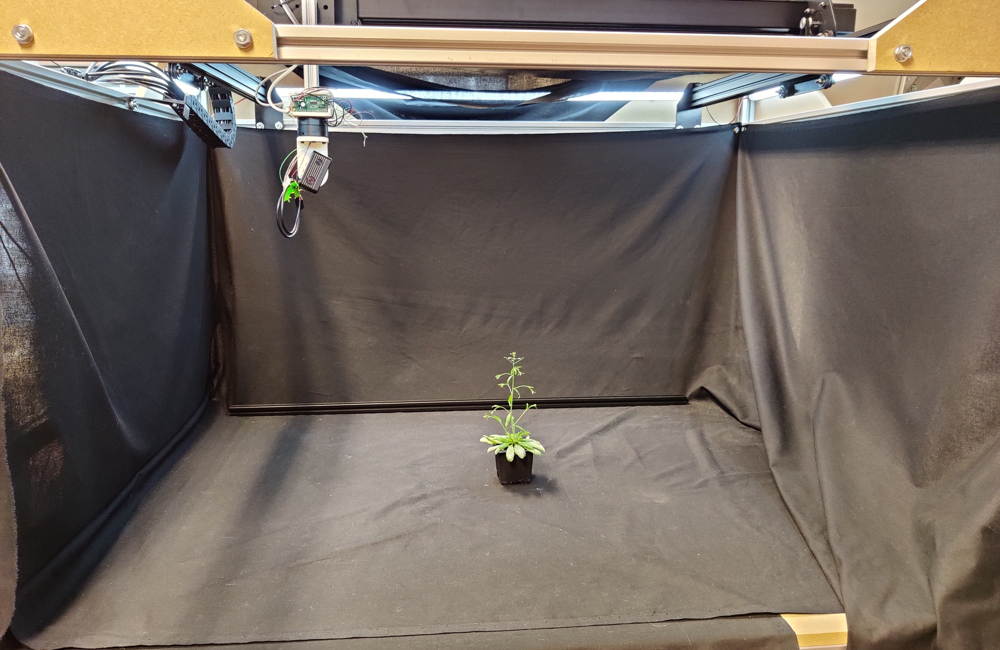

Plant Imager BotLink
ObjectiveLink
This tutorial will guide through the steps of acquiring images of a plant using the plant imager robot

In order to collect data in the process of plant phenotyping, the plant imager robot takes RGB images of an object following a particular path with precise camera poses.
PrerequisiteLink
To run an acquisition, you should previously have:
Step-by-step tutorialLink
1. Check that you are well interfaced with the plant imagerLink
- make sure you are in the conda environment or that you run properly the docker for the
plantimagerrepository - interface the machine running the ROMI software with the plant imager:
- check that your device is correctly connected to the Gimbal and CNC both by USB
- turn on camera and connect it to the device via Wi-Fi
- set up a DB or quickly generate a simple database with the following commands:
mkdir path/to/db
touch path/to/db/romidb
You have now your file based database plantdb
2. Get the right configurationLink
Scan is the basic task for running an acquisition with the robot.
To run this task properly with romi_run_task, a configuration file is needed.
A default one for the plant imager can be found under plantimager/config/hardware.toml.
It regroups specifications on:
- the acquisition path (ScanPath)
- needed parameters for connection between hardware components (CNC, Gimbal and camera) and software (Scan.scanner)
- object metadata (in Scan.metadata.object)
- hardware metadata (in Scan.metadata.hardware)
An important parameter is the number of images acquisition you want to perform, defined by n_points.
If you pick a number of acquisition in the following range of values, it will result in an integer rotation angle:
1, 2, 3, 4, 5, 6, 8, 9, 10, 12, 15, 18, 20, 24, 30, 36, 40, 45, 60, 72, 90, 120, 180, 360.
The truly recommended values are in bold.
[ScanPath] # Example, circular path with 60 points:
class_name = "Circle"
[ScanPath.kwargs]
center_x = 375
center_y = 375
z = 80
tilt = 0
radius = 300
n_points = 60
[Scan.scanner.cnc] # module and kwargs linked to the CNC
module = "plantimager.grbl"
[Scan.scanner.cnc.kwargs]
homing = true
port = "/dev/ttyACM0"
[Scan.scanner.gimbal] # module and kwargs linked to the gimbal
module = "plantimager.blgimbal"
[Scan.scanner.gimbal.kwargs]
port = "/dev/ttyACM1"
has_tilt = false
zero_pan = 0
invert_rotation = true
[Scan.scanner.camera] # camera related parameters
module = "plantimager.sony"
[Scan.scanner.camera.kwargs]
device_ip = "192.168.122.1"
api_port = "10000"
postview = true
use_flashair = false
rotation = 270
[Scan.metadata.object] # object related metadata
species = "chenopodium album"
seed_stock = "Col-0"
plant_id = "3dt_chenoA"
growth_environment = "Lyon-indoor"
growth_conditions = "SD+LD"
treatment = "None"
DAG = 40
sample = "main_stem"
experiment_id = "3dt_26-01-2021"
dataset_id = "3dt"
[Scan.metadata.hardware] # hardware related metadata
frame = "30profile v1"
X_motor = "X-Carve NEMA23"
Y_motor = "X-Carve NEMA23"
Z_motor = "X-Carve NEMA23"
pan_motor = "iPower Motor GM4108H-120T Brushless Gimbal Motor"
tilt_motor = "None"
sensor = "RX0"
[Scan.metadata.workspace] # A volume containing the target imaged object
x = [ 200, 600,]
y = [ 200, 600,]
z = [ -100, 300,]
Warning
This is a default configuration file. You will most probably need to create one to fit your hardware setup. Check the configuration documentation for the hardware and the imaged object
3. Run an acquisition with the Scan taskLink
Assuming you have an active database, you can now run the Scan task using romi_run_task:
romi_run_task --config config/hardware.toml Scan /path/to/db/imageset_id/
where:
/path/to/dbmust be an existing FSDB database- there is no
/path/to/db/imageset_idalready existing in the database.
This will create the corresponding folder and fill it with images from the imageset.
Warning
After a rather short time following running the command, you should hear the robot start and when the acquisition is finished, a This progress looks :) should appear.
If it's not the case, try to look at the Troubleshooting section at the end of this tutorial
4. Obtain an image setLink
Once the acquisition is done, the database is updated, and we now have the following tree structure:
db/
├── imageset_id/
│ ├── files.json
│ ├── images/
│ ├── metadata/
│ │ └── images/
│ │ └── images.json
│ └── scan.toml
└── romidb
with:
imagescontaining a list of RGB images acquired by the camera moving around the plantmetadata/imagesa folder filled with json files recording the poses (camera coordinates) for each taken imagemetadata/images.jsoncontaining parameters of the acquisition that will be used later in reconstruction (type of format for the images, info on the object and the workspace)files.jsondetailing the files contained in the imageset_idscan.json, a copy of the acquisition config file
You can now reconstruct your plant in 3d !
TroubleshootingLink
Serial access deniedLink
- The CNC and Gimbal might be connected to different ports than the ones specified in the configuration file. Please check with the
dmesg -wcommand. - Look here if you can not communicate with the scanner using usb.
- Make sure the device used to run the acquisition is indeed connected to the camera (Wi-Fi)
- Message to Gimbal still transiting :
Traceback (most recent call last):
File "/home/romi/miniconda3/envs/scan_0.8/lib/python3.8/site-packages/serial/serialposix.py", line 265, in open
self.fd = os.open(self.portstr, os.O_RDWR | os.O_NOCTTY | os.O_NONBLOCK)
OSError: [Errno 16] Device or resource busy: '/dev/ttyACM0'
Try disconnect and reconnect the USB link and rerun an acquisition